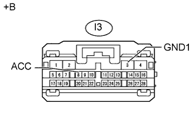

DTC C1613 Низкое или высокое напряжение ACC |
| Код DTC | Условие обнаружения DTC | Неисправный участок |
| C1613 |
|
|
| 1.СНИМИТЕ ПОКАЗАНИЯ ПОРТАТИВНОГО ДИАГНОСТИЧЕСКОГО ПРИБОРА |
Подсоедините портативный диагностический прибор к DLC3.
Поверните замок зажигания в положение ACC.
Включите портативный диагностический прибор.
Войдите в следующие меню: Chassis / Parking Assist Monitor System / Data List.
Проверьте в режиме Data List следующие параметры.
| Информация на дисплее прибора | Измеряемая величина / диапазон измерения | Нормальное состояние | Замечание по диагностике |
| ACC Voltage Low Status | Входное напряжение ACC в ЭБУ системы помощи при парковке / OK или NG | ОК: нормальное напряжение ACC NG: ненормальное напряжение ACC (слишком низкое) | - |
| ACC Voltage High Status | Входное напряжение ACC в ЭБУ системы помощи при парковке / OK или NG | ОК: нормальное напряжение ACC NG: ненормальное напряжение ACC (слишком высокое) | - |
| Результат | Следующий шаг |
| Для обоих параметров отображается "OK" (для моделей с левосторонним рулевым управлением) | А |
| Для обоих параметров отображается "OK" (для моделей с правосторонним рулевым управлением) | B |
| Для обоих параметров отображается NG | C |
|
| ||||
|
| ||||
| А | ||
| ||
| 2.ПРОВЕРЬТЕ ЖГУТ ПРОВОДОВ И РАЗЪЕМ (НАПРЯЖЕНИЕ ACC ЭБУ СИСТЕМЫ ПОМОЩИ ПРИ ПАРКОВКЕ) |
|  |
Отсоедините разъем I3 ЭБУ системы помощи при парковке.
Измерьте напряжение в соответствии со значениями, приведенными в таблице.
| Контакты для подключения диагностического прибора | Положение переключателя | Заданные условия |
| I3-8 (ACC) - I3-3 (GND1) | Замок зажигания в положении ACC | 11 - 14 В |
| *a | Вид спереди разъема со стороны жгута проводов: (к ЭБУ системы помощи при парковке) |
|
| ||||
| OK | ||
| ||